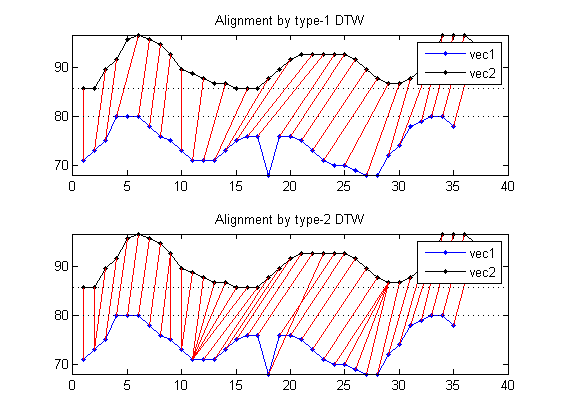
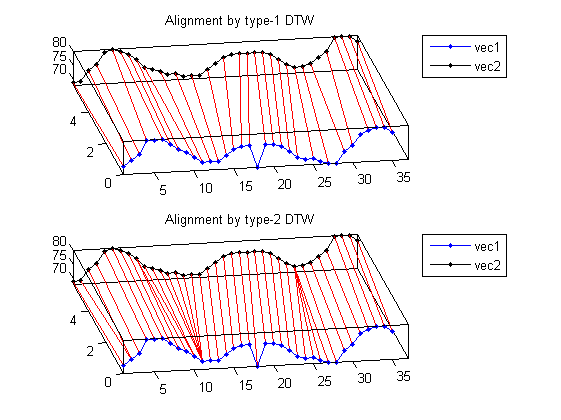

dtwBridgePlot
Bridge Plot of point-to-point mapping of DTW
Contents
Syntax
- dtwBridgePlot(vec1, vec2, dtwPath)
- dtwBridgePlot(vec1, vec2, dtwPath, viewType)
Description
dtwBridgePlot(vec1, vec2, dtwPath) plots the point-to-point mapping of DTW between vec1 and vec2.
dtwBridgePlot(vec1, vec2, dtwPath, viewType) uses the specified view type to do plotting:
- viewType='2d' for 2D view of the bridge plot (This is the default.)
- viewType='3d' for 3D view of the bridge plot
Example
2D view of the bridge plot
vec1=[71 73 75 80 80 80 78 76 75 73 71 71 71 73 75 76 76 68 76 76 75 73 71 70 70 69 68 68 72 74 78 79 80 80 78]; vec2=[69 69 73 75 79 80 79 78 76 73 72 71 70 70 69 69 69 71 73 75 76 76 76 76 76 75 73 71 70 70 71 73 75 80 80 80 78]; dtwOpt=dtwOptSet; dtwOpt.type=1; [minDist1, dtwPath1, dtwTable1] = dtw(vec1, vec2, dtwOpt); dtwOpt.type=2; [minDist2, dtwPath2, dtwTable2] = dtw(vec1, vec2, dtwOpt); subplot(2,1,1); dtwBridgePlot(vec1, vec2, dtwPath1, '2d'); title('Alignment by type-1 DTW'); subplot(2,1,2); dtwBridgePlot(vec1, vec2, dtwPath2, '2d'); title('Alignment by type-2 DTW');
3D view of the bridge plot
figure; subplot(2,1,1); dtwBridgePlot(vec1, vec2, dtwPath1, '3d'); title('Alignment by type-1 DTW'); view(-10, 70); subplot(2,1,2); dtwBridgePlot(vec1, vec2, dtwPath2, '3d'); title('Alignment by type-2 DTW'); view(-10, 70);
See Also
dtwBridgePlot, dtw1, dtw2, dtw3.